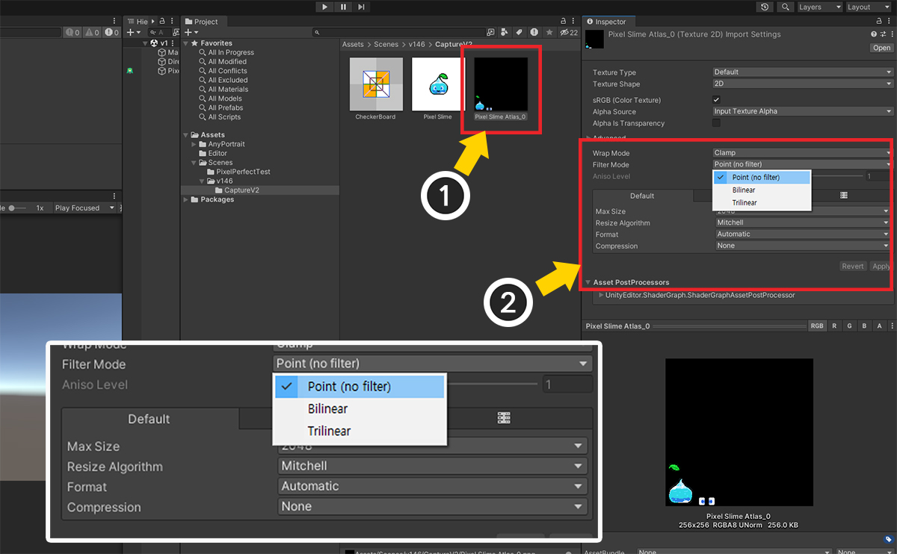
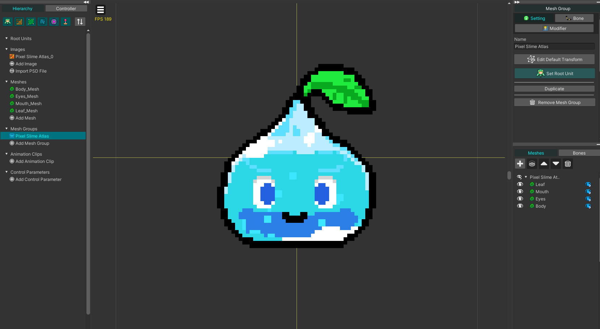
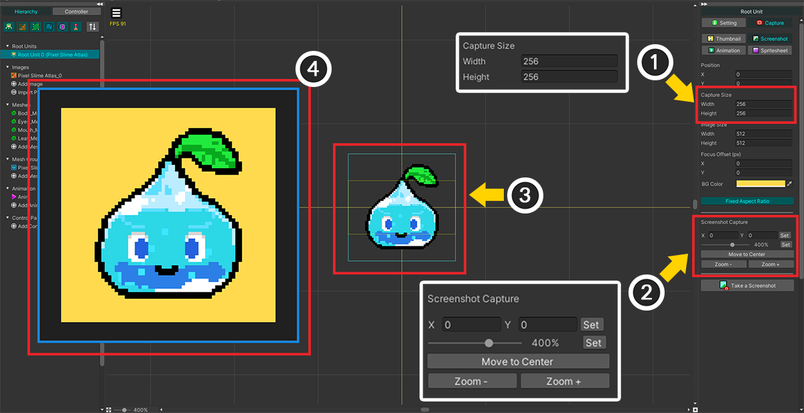

AnyPortrait > Manual > Improved Screen capture
Improved Screen capture
1.4.6
The screen capture function has been improved in AnyPortrait v1.4.6 based on feedback from users.
This manual deals with changes from the previous screen capture function.
For how to use the screen capture functions, check the "Screen Capture" manual.
Using the enhanced capture feature

Version 1 (Legacy) or Version 2 can be selected as an option for "Capture > Processor" in the settings dialog.
- Version 1 (Legacy) : Capture is performed using the capture code of the previous version. Select this option to ensure consistency in resource creation.
- Version 2 : Capture is performed using the improved code. Updating to v1.4.6 will select this option by default.
If Version 2 is selected, the following changes are made internally.
- Excessive blur problem does not occur because the previous image resizing code does not work.
- The problem that the render resolution is distorted depending on the size of the editor UI has been resolved.
- There is a limit on the size of the image relative to the capture area.
- The processing time has increased slightly, and the time may increase significantly depending on the image size.
You can check the differences below by selecting Version 2.
In Unity 2020, an issue has been reported where Version 2 does not operate properly.
Please use Version 1 for this Unity version.
Focus Offset

(1) If you try to capture the screen with the Version 2 option, you can see a new option Focus Offset (px). Let's try entering 300.
(2) Looking at the capture result, you can see that the character has moved 300 pixels more than before.
Note that Focus Offset moves the focus, not the character, so the character moves in the opposite direction of the entered value.
The Focus Offset (px) option is a new way to move the capture area.
The differences between the three methods for where the character is captured are:
- Position option : Moves the capture area on Editor coordinate system. The blue rectangle in the workspace moves.
- Focus Offset (px): Moves the capture area based on Pixel coordinate system of the saved image file. Since it is moved in units of pixels, it can be moved precisely.
- Drag in workspace: This is a method to move the character's position. This is a quick and intuitive method, and uses Editor coordinate system.
Size Limit

This is a limitation of Version 2.
The previous image resizing code doesn't work, instead there is a limit to the relative size of the image.
(1) Let's set the value of Image Size very large.
(2) A warning message indicating that capture cannot be performed informs you of the maximum resolution that can be captured.
This size limit can change depending on the "capture area size" and "execution device memory size".
Since it is a relative value compared to the capture area, not an absolute limitation of the image size, you can avoid the limitation and capture by expanding the capture area.
Save image in Pixel Art Style
Excessive image resizing code does not work with the new capture method.
Thanks to it, it is possible to capture pixel art style images as they are.

Slime character made in pixel art style.
It was imported using PSD import, and a little blur is applied as above.

(1) Select the image from Assets in Unity Editor.
(2) Select "Point (no filter)" for the Filter Mode property, and change the Compression property to "None". (Disabling the Mipmap attribute is also recommended.)

Back in the AnyPortrait editor, you can clearly see the pixels of the slime characters.

If you execute capture in this state, it is possible to create a pixel art style image as above.
There is an error in pixel-by-pixel capture!
Since AnyPortrait is a tool for Unity, a 3D engine, it has position values of real numbers rather than integers.
Therefore, when you try to save in pixel units, a position error may occur, resulting in a different result from the original resource.
This may not be suitable for precise pixel art animation, so use with caution.
Processing time greatly increased by image size
The disadvantage of the new method is that the processing time greatly increases depending on the image resolution.
Since this processing time is based on the relative value of the size of the capture area, understanding this characteristic can greatly reduce processing time.

(1) Try capturing with Capture Size set to "64x64" and Image Size set to "512x512".
(2) A warning message appears stating that the processing time will increase significantly.
If you press the Okay button, capture will be executed, but it will take quite a while.
The resolution of "512x512" is not very large, but compared to the capture area size of "64x64", each axis is 8 times larger, so the magnification ratio is quite large.
Because the important thing in the screen capture process in the new version is the relative size.
The simplest way to solve this problem is to reduce the size of the saved image, that is, Image Size.
However, it is also good to reduce the relative magnification by increasing the size of the capture area, that is, Capture Size, which is the standard.

(1) Change Capture Size to "256x256". You will see the frames being captured in the workspace grow.
(2) Precisely move and enlarge the character according to the enlarged capture area using the tools of the capture UI.
(3) You can see that the character has been enlarged to fit the capture area frame.
(4) If you run the capture now, you can see that the image is created for a short period of time without a warning message appearing.